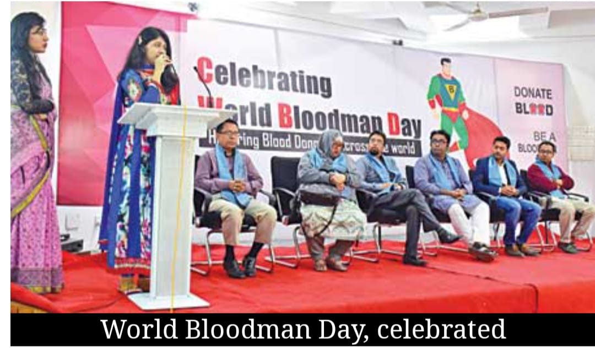
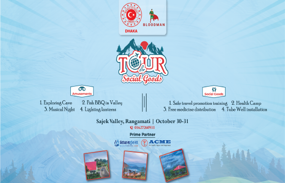
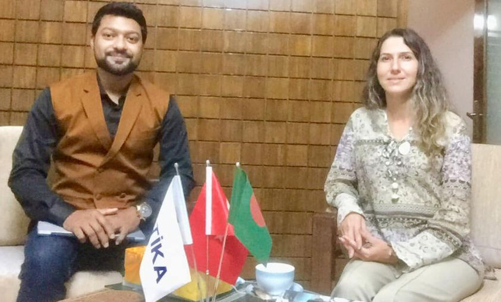

Public campaign
World Bloodman Day
A signature public-facing moment that turns blood donation advocacy into a visible movement and community gathering.
Impact
Bloodman’s old site included awards, partners, events, and campaign stories. This updated impact page turns those fragments into a clearer narrative of how the organization shows up in the world.

Public campaign
A signature public-facing moment that turns blood donation advocacy into a visible movement and community gathering.

Volunteer network
The organization’s strongest asset is a volunteer structure that can move quickly in emergencies and still support long-term programs.

Recognition
Bloodman’s legacy platform highlighted awards and partnerships as proof that the work is recognized beyond internal circles.
Community reach
Impact is strongest when the same families who trust Bloodman in a crisis also see it in camps, events, and relief work.
Program Tracks
These tracks show the full scope of Bloodman’s work across emergency response, medical support, community care, and public outreach.
The original and still central Bloodman service: fast donor matching and urgent support coordination.
Remote care access and consultation support that expanded Bloodman beyond emergency-only interactions.
Localized outreach work that brings screenings, information, and community-facing care to people directly.
Capacity building and collaborative training that strengthens the quality of care networks around the platform.
Relief distribution and family support work built on the same volunteer and logistics engine.
Partners and Recognition
The legacy site surfaced awards, partner logos, and recognition as proof that Bloodman’s work was visible to institutions as well as families. That context matters, so it is preserved here as part of the impact story.
Legacy award showcases recognized community service, field visibility, and public-good organizing.
The earlier platform highlighted partner organizations and collaborators as a sign of reach, legitimacy, and execution capacity.
Campaign launches, donor movements, recognition days, and public programs gave Bloodman a visible civic presence beyond the hotline.